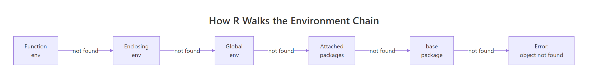
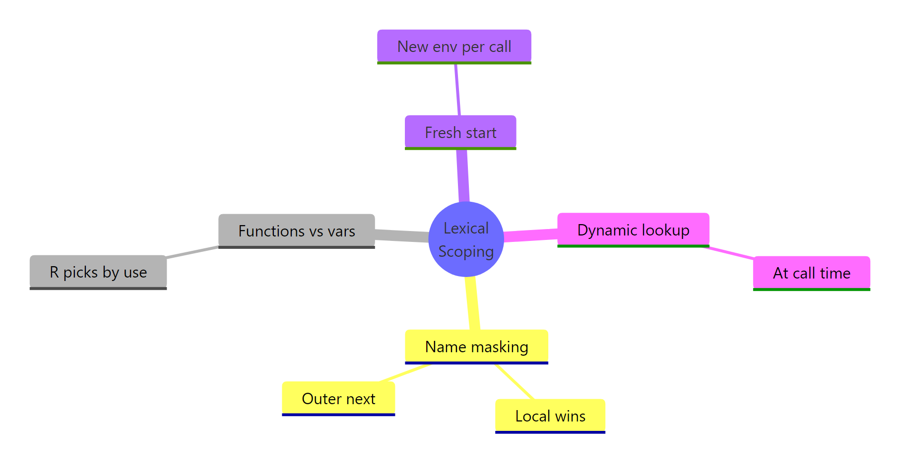
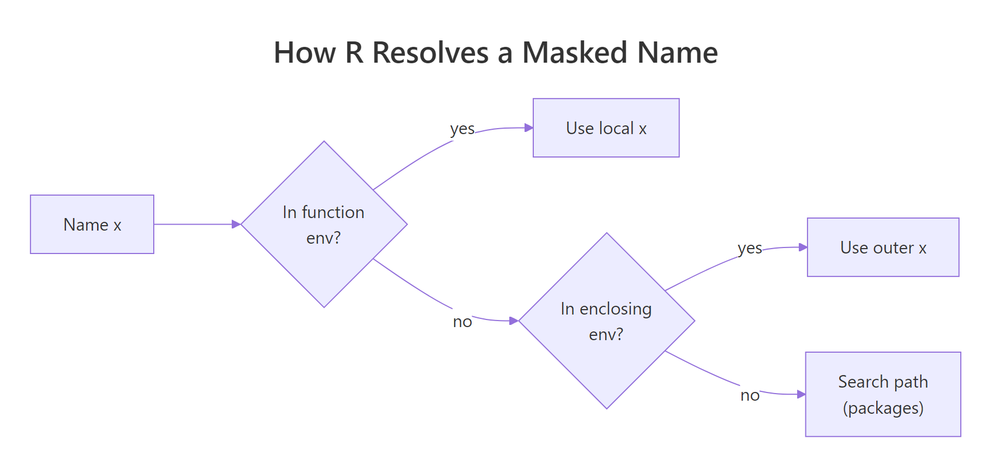
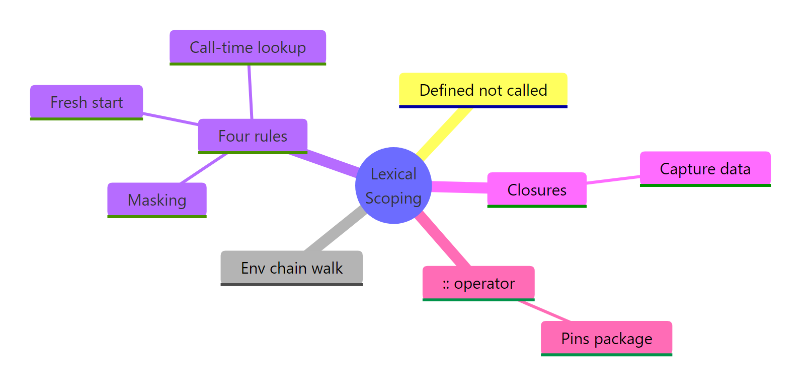

R Lexical Scoping: Why R Finds Variables Where It Does (And Not Where You Expect)
Lexical scoping is R's rule for finding values: a function looks up a name in the environment where it was defined, not where it was called. Understanding that one rule explains most "weird" R behavior, why mean() just works, why closures remember their data, and why a tiny rename can silently break a function.
What is lexical scoping in R?
The clearest way to see lexical scoping is to watch it at work. Below, f() uses a variable x it never defined, where does R find it? And what happens when we change x after defining f? This tiny example already contains two of the four rules we'll unpack below.
Two things happened. First, f() found x in the environment where it was defined (the global environment), that's the lexical part. Second, the value it found was 99, not the 10 that existed when f was written. R looked up x when we called f, not when we defined it. That timing rule is called dynamic lookup, and yes, "lexical" + "dynamic lookup" sounds like a contradiction, more on that in a minute.
The word "lexical" comes from the Greek lexis, meaning "word." A lexically scoped language decides where to look for a name based on the textual location of the code, where the characters that make up the function literally live in the source file.
Try it: Write a function ex_times_k that multiplies its input by an outer variable k. Prove lexical scoping by changing k between calls and observing the return value.
Click to reveal solution
Explanation: ex_times_k never defines k, so R resolves it in the global environment where ex_times_k was defined. Because lookup happens at call time, the second call sees the updated k.
How does R walk environments to find a variable?
When R resolves a name, it doesn't just check one place. It walks a chain of environments, stopping at the first hit or throwing object not found if it reaches the end.
The chain starts in the function's own environment (its local variables), jumps to the enclosing environment (where the function was defined, usually the global env for top-level functions), then to that environment's parent, and so on through every attached package until it reaches base R.

Figure 1: How R walks the environment chain when resolving a name.
Nested functions make the walk visible. Below, inner() has no local z, and its enclosing environment (inside outer()) has no z either. R keeps walking until it reaches the global env.
inner() found y in its enclosing env (outer's body) and z all the way up in the global env. It didn't stop at outer() and give up; it kept going.
After the global env, R continues through whatever packages are attached. The built-in search() function shows that path in order.
That's why mean() just works without a library() call. Base R sits at the end of the search path, and mean lives there. Your exact output depends on which packages are attached in your session.
library() inserts it between .GlobalEnv and the previously-loaded packages, so the order changes every time you attach something new.Try it: Predict what ex_inner() returns below, "outer" or "global"? Then run the code to check your answer.
Click to reveal solution
Explanation: ex_inner was defined inside ex_outer, so its enclosing environment is ex_outer's body. R finds ex_val there before walking further up. This is the core of lexical scoping: the enclosing env is decided by where the function was written.
What are the four rules of R lexical scoping?
Hadley Wickham's Advanced R distills lexical scoping into four rules. Each one is a sentence of theory backed by a tiny example, we'll cover all four in this section.

Figure 2: The four rules of R lexical scoping summarised as a mindmap.
Rule 1, Name masking. A local binding always wins over an outer one with the same name. R checks the innermost environment first.
g() created its own x, so that's what the body saw. The global x is untouched, each function call creates a fresh, isolated environment. That's also why reassigning inside a function doesn't leak out.
Rule 2, Functions vs variables. R can tell whether you're calling a value or using it. When you write foo(5), R walks the scope chain looking specifically for a function called foo, skipping any non-function bindings on the way.
The local n is the number 10, but n(5) is unambiguous syntax for "call a function." R walked past the number and found the function n in the global env. This rule only applies in call position, n + 1 inside test() would give 11.
Rule 3, A fresh start. Every call to a function creates a brand-new environment. Local state from one call never carries over to the next.
Every call resets count to 0 and increments once. That's why you need closures (coming up) or super-assignment <<- to actually persist state, plain function calls can't do it.
Rule 4, Dynamic lookup. R resolves names when the function runs, not when it's defined. We saw this in the opening example: changing x after defining f changed what f() returned.
This is convenient for REPL work but dangerous in long-lived code: if something renames or deletes y upstream, h() silently starts returning the wrong answer or errors out.
codetools::findGlobals(h) to list the outer names a function depends on. It's the fastest audit for "what could break upstream and silently change this function's behavior?"Try it: Rewrite counter_naive (Rule 3) so it actually counts across calls. Use the super-assignment operator <<- to update a variable in the enclosing environment.
Click to reveal solution
Explanation: <<- tells R to walk up the scope chain and assign to the first count it finds, here, the global one. Regular <- would create a new local count and lose it on return.
How do you handle name masking safely in R?
Masking becomes a real problem when a package overrides a name you were already using. The classic example: loading dplyr attaches filter(), which shadows stats::filter(), a base R function for linear filtering of time series. The name is identical, the behavior is wildly different.
The :: operator tells R: "don't search. Use the function from this namespace, period." It bypasses the search path entirely and pulls the function directly from the package's namespace.

Figure 3: How R resolves a name that exists in multiple environments.
pkg::func() is the only lookup that can never be masked. Use it in package code, production scripts, and anywhere a reader can't instantly tell which packages are loaded. It costs two characters and saves you from an entire category of silent bugs.Try it: A script broke after a colleague added library(stats) above it. The original call was filter(mtcars, mpg > 25). Fix it so the call always resolves to the dplyr version.
Click to reveal solution
Explanation: dplyr::filter pins the lookup to dplyr's namespace. Whatever else is on the search path, stats::filter, a user-defined filter, a rogue package, can't interfere.
How does lexical scoping enable closures in R?
Closures are the big payoff of lexical scoping. A closure is a function plus the environment it was defined in, captured and carried around as a single bundle. Because R resolves free variables lexically, that enclosing environment stays alive as long as the function does. The function can "remember" data even when the code that created it has long since returned.
Each call to make_counter() creates a fresh environment holding its own count. counter1 and counter2 each capture a different environment, so their counts are independent. The <<- inside the inner function writes to count in the enclosing env, that's the closure being updated.
There's no magic here, just the four rules from above: name masking (inner function's own count would shadow, if it existed), fresh start (each make_counter() call gets its own env), and dynamic lookup (the inner function reads count at call time from the captured env).
Try it: Build ex_make_adder(n) that returns a function which adds n to its input. Then use it to create ex_add5 and call it on 10.
Click to reveal solution
Explanation: The returned function captures n from its enclosing environment, the body of ex_make_adder. Each call to ex_make_adder creates a fresh env holding its own n, so ex_make_adder(5) and ex_make_adder(7) produce independent adders.
How does lexical scoping differ from dynamic scoping?
Dynamic scoping is the opposite rule: free variables are resolved in the environment of the caller, not the definer. Perl (with local), older Lisps, and some shell languages use dynamic scoping. R does not, by default.
In practice, that means a function doesn't care who called it. It only cares where it was born.
Under dynamic scoping, callee() would look up a in caller()'s environment and print "caller a". Under R's lexical rule, callee() was defined at the top level, so its enclosing env is global, and it sees the global a. The fact that caller() happens to have its own a is irrelevant.
This is why refactoring R code is relatively safe: renaming a local variable in one function can never accidentally affect another function, because that other function looks up names in its own lexical chain, not yours.
new.env(), populate it, and rebind the function with environment(f) <- e. That's lexical scoping turned into a test harness, you're swapping out the "where was it defined" context on purpose.Try it: Predict what the block below prints. Does ex_inner_fn() see "outer z" or "caller z"?
Click to reveal solution
Explanation: ex_inner_fn was defined at the top level, so its enclosing env is the global env. R resolves ex_z there, ignoring the local ex_z inside ex_caller_fn. That's lexical scoping in one sentence.
Practice Exercises
Two capstone exercises that combine multiple concepts from this tutorial. Use distinct variable names (my_ prefix) so they don't collide with tutorial code running in the same session.
Exercise 1: Countdown closure
Write my_countdown(start) that returns a function. Each call to the returned function decrements the count by one and returns the new value. Once it reaches 0, further calls keep returning 0 (don't go negative). Use a closure and <<-.
Click to reveal solution
Explanation: my_countdown captures start in its enclosing env as count. The returned function reads and decrements count via <<-. The if (count > 0) guard prevents it from going below zero. Each my_countdown() call creates a fresh environment, so my_c1 <- my_countdown(5) and my_c2 <- my_countdown(10) would be independent countdowns.
Exercise 2: Scoped evaluator
Write my_scoped_eval(expr, vars) that evaluates an R expression expr in a fresh environment where the named list vars is bound. The function should not leak any of these names into the global environment. Use new.env(), list2env(), and eval().
Click to reveal solution
Explanation: new.env(parent = baseenv()) creates an empty environment whose only fallback is base R, global variables are cut out of the scope chain. list2env loads the bindings; eval runs expr there. Because the bindings live in a local env that disappears when my_scoped_eval returns, nothing leaks. This is exactly the trick dplyr::mutate() and ggplot2::aes() use to evaluate expressions against a data frame's columns.
Complete Example: A rate-limited function factory
Let's put all four rules to work. The goal: write rate_limit(f, max_calls) that wraps any function so it errors once it's been called more than max_calls times. The wrapper needs to remember how many times it's been called, a closure with private state.
Every rule shows up here. Name masking: the wrapper's call_count doesn't collide with anything the wrapped function uses. Fresh start: each rate_limit() call creates its own call_count, so two wrapped functions don't share a counter. Dynamic lookup: max_calls is read at call time from the enclosing env, so the limit applies whenever the wrapper runs. Closure: the inner function plus the enclosing env (with call_count and f) travel together as limited_print.
Try creating two independent wrappers, rate_limit(print, 2) and rate_limit(print, 5), and confirm they keep separate counters. That's lexical scoping doing its job.
Summary

Figure 4: R lexical scoping at a glance.
| Rule | What it means | Practical takeaway |
|---|---|---|
| Lexical rule | Free variables resolve in the env where the function was defined. | Refactoring inside one function can't accidentally break another. |
| Environment chain | R walks from function env → enclosing env → … → global → packages → base. | mean() works without a library() call because base is at the end of the path. |
| Name masking | The innermost binding wins. | Local variables can't be clobbered by globals; loading a package can shadow existing names. |
| Fresh start | Each call creates a new environment. | Plain functions can't persist state between calls, use closures or <<-. |
| Dynamic lookup | R reads names at call time, not define time. | A function can silently change behavior if upstream names change. Audit with codetools::findGlobals. |
:: operator |
Pins a lookup to a specific package's namespace. | The only masking-proof call. Use it in library code and anywhere you can't see what's loaded. |
| Closures | Function + captured env carried together. | Every Shiny reactive, ggplot2 theme, and purrr partial is secretly this. |
Lexical scoping isn't just a rule about where R finds variables, it's the foundation for closures, namespaces, the search path, and most of R's functional-programming style. Once you internalise the distinction between where (lexical) and when (dynamic), the rest of R's environment behavior stops feeling magical and starts feeling predictable.
References
- Wickham, H., Advanced R, 2nd Edition. CRC Press (2019). Chapter 6.4: Lexical scoping, and Chapter 7: Environments. Link
- R Core Team, R Language Definition, Section 3.5: Scope of variables. Link
- Peng, R., R Programming for Data Science, Chapter 15: Scoping Rules of R. Link
- R Documentation,
search()andenvironmentName(). Link - codetools package,
findGlobals()reference. Link
Continue Learning
- R Environments, the data structure underneath lexical scoping. Environments are how R actually stores the bindings that scoping walks through.
- R Closures, the pattern lexical scoping makes possible. Deeper dive into capture-by-reference, super-assignment, and common closure idioms.
- R Functions, writing your own functions. Covers arguments, return values, defaults, and how everything you wrote above actually becomes a
functionobject.